2025年お正月
https://www.sogo-seibu.jp/ikebukuro/topics/page/ganjitsukyugyo2025.htmlwww.sogo-seibu.jp
完成例
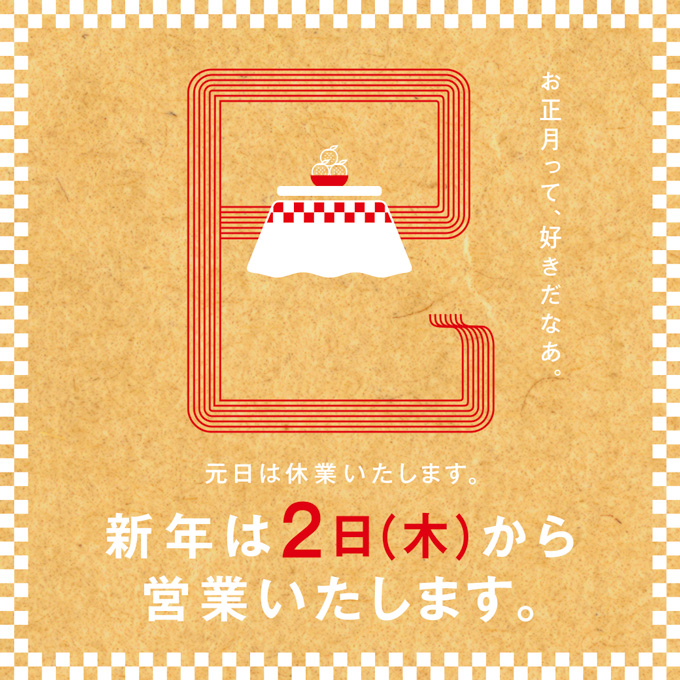 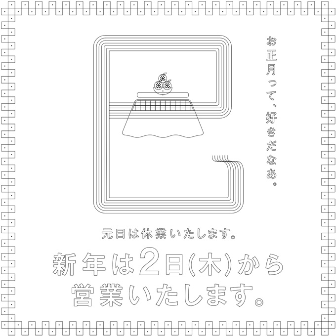
制作ポイント
- 一見すると、「パターン」と「ブレンド」のみで作ることができそうに見えます
パターンを作成
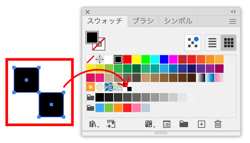
パターンの問題点
- 数値でパターンを当てはめたい長方形を描いてもずれる
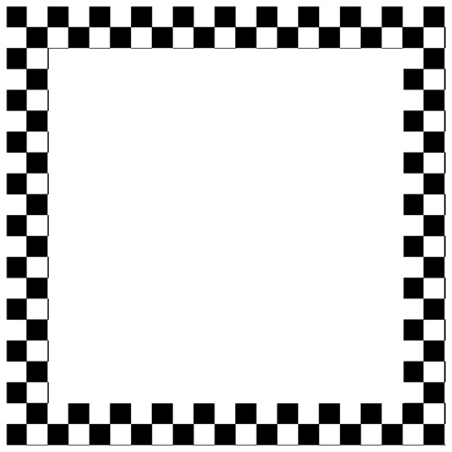
「パターン」を微調整したい場合
- 「選択ツール」をダブルクリックして「移動ツール」を表示
- 「パターンを変形」のみにチェックをし、数値で微調整します
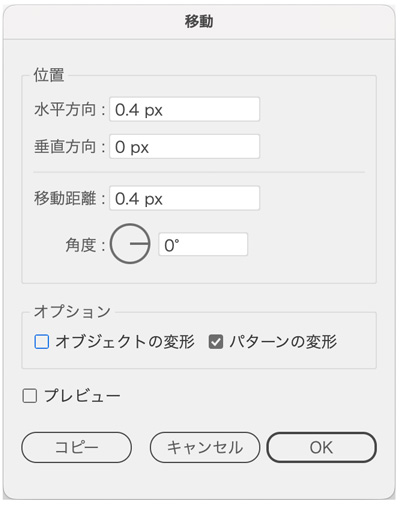
正方形パターン模様の場合
- 「移動ツール」でコピーを繰り返すと正確な模様を完成させやすい
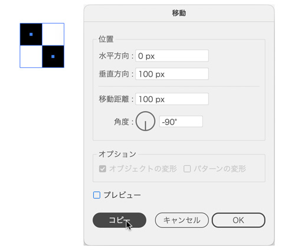
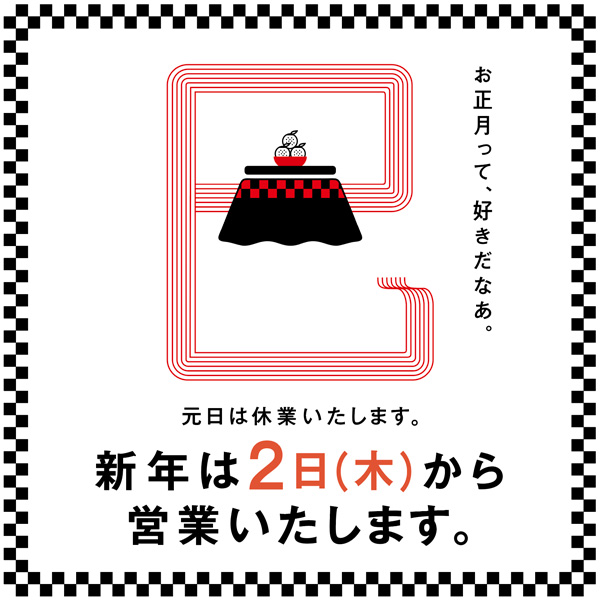
選択（塗り）で色を変更
- 「塗り：黒」を「塗り：白」に変換
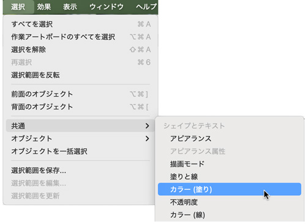
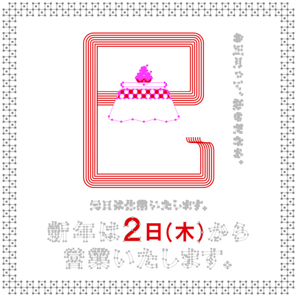
コーナーウィジェット
- 「コーナーウィジェット」を使って「長方形」の角の丸みを変形する
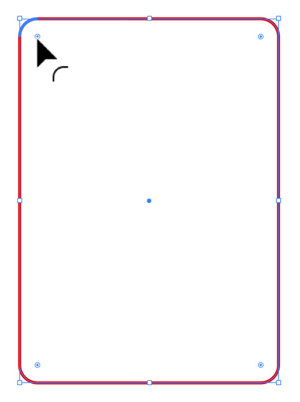
巳という漢字
- 「ブレンド」で作成すると以下のようになります（うまくいきません）
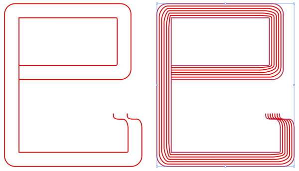
- 「アンカーポイント」の数と位置の関係で均等なブレンドになるわけではありません
- 今回は「パスのオフセット」で作成します（ただし、巳という漢字のオフセットで簡単には作成できません）
- オフセットで作成した「角丸長方形」を移動コピーしながら「巳という漢字」に仕上げます
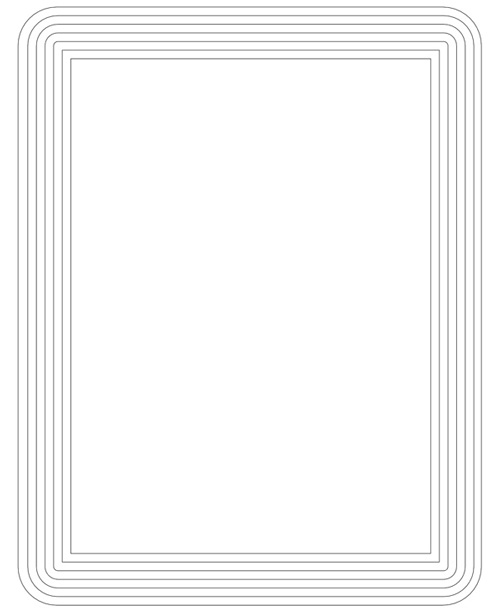
- 「オフセット」で必要な本数の角丸長方形ができたら、移動コピーし不要なところを削除します
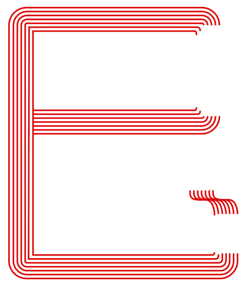
- つなげたい２点を「ダイレクト選択ツール」で選択し、パスの連結
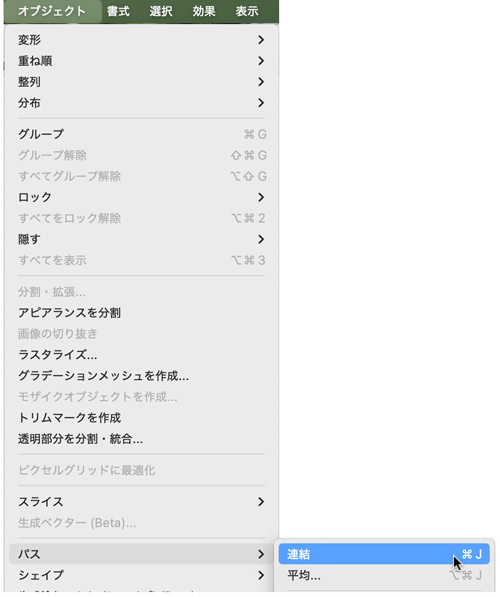
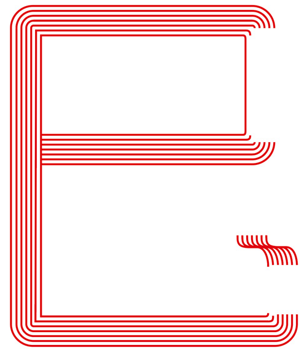
完成
- 背景に「紙」のテクスチャーを配置して完成
- 完成例は、Photoshopで「紙」のテクスチャーを加工し、Illustratorのデータを「スマートオブジェクト」で配置しています